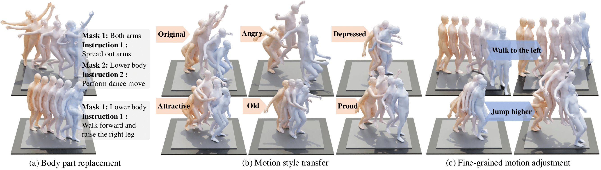

1Institute for AI, Peking University
2State Key Laboratory of General Artificial Intelligence, BIGAI
3Yuanpei College, Peking University *Equal Contributions ✉️ Corresponding Authors
MotionReFit enables seamless spatial and temporal motion edits through textual instructions. Powered by our MotionCutMix training strategy, MotionReFit leverages abundant unannotated motion data to augment scarce editing triplets, enabling robust and generalizable editing across diverse scenarios.
Interactive Motion Editing
MotionReFit supports interactive motion modification by using previously edited motions as input for subsequent processes. Users can build upon earlier edits by feeding the modified motion back into the model with new prompts.
Overview Video
Results on Body Part Replacement
Results on Style Transfer
Results on Fine-grained Adjustment
Abstract
Text-guided motion editing enables high-level semantic control and iterative modifications beyond traditional keyframe animation. Existing methods rely on limited pre-collected training triplets (original motion, edited motion, and instruction), which severely hinders their versatility in diverse editing scenarios. We introduce MotionCutMix, an online data augmentation technique that dynamically generates training triplets by blending body part motions based on input text. While MotionCutMix effectively expands the training distribution, the compositional nature introduces increased randomness and potential body part incoordination. To model such a rich distribution, we present MotionReFit, an auto-regressive diffusion model with a motion coordinator. The auto-regressive architecture facilitates learning by decomposing long sequences, while the motion coordinator mitigates the artifacts of motion composition. Our method handles both spatial and temporal motion edits directly from high-level human instructions, without relying on additional specifications or Large Language Models (LLMs). Through extensive experiments, we show that MotionReFit achieves state-of-the-art performance in text-guided motion editing. Ablation studies further verify that MotionCutMix significantly improves the model's generalizability while maintaining training convergence.
Method Overview
MotionRefit
MotionRefit processes the original motion through sliding windows, where body keypoints are encoded for input to a transformer-based motion diffusion model. To ensure motion continuity, noise is applied starting from the third frame while preserving the first two frames. The model incorporates an additional token integrating the editing instruction, diffusion step, and progress indicator. The generated keypoints undergo SMPL-X optimization and merging to create the final edited motion. To enhance body part coordination, we employ a discriminator trained to identify motion segments composed of multiple source motions, which guides the denoising process through classifier guidance.
Spatial Motion Blending
Spatial motion blending enables seamless integration of different motions across body parts. We compare hard versus soft masking, showing how soft masks produce smoother transitions and eliminate boundary artifacts.
The STANCE Dataset

Sample sequences from our STANCE dataset. Our work introduces three complementary datasets: (a) a body part replacement dataset comprising 13,000 sequences from HumanML3D, annotated with an average of 2.1 body masks and corresponding motion descriptions; (b) a motion style transfer dataset containing 2 hours of new MoCap recordings that recreate HumanML3D sequences in various styles; and (c) a fine-grained motion adjustment dataset featuring 16,000 annotated triplets of generated motion pairs with their corresponding descriptions.